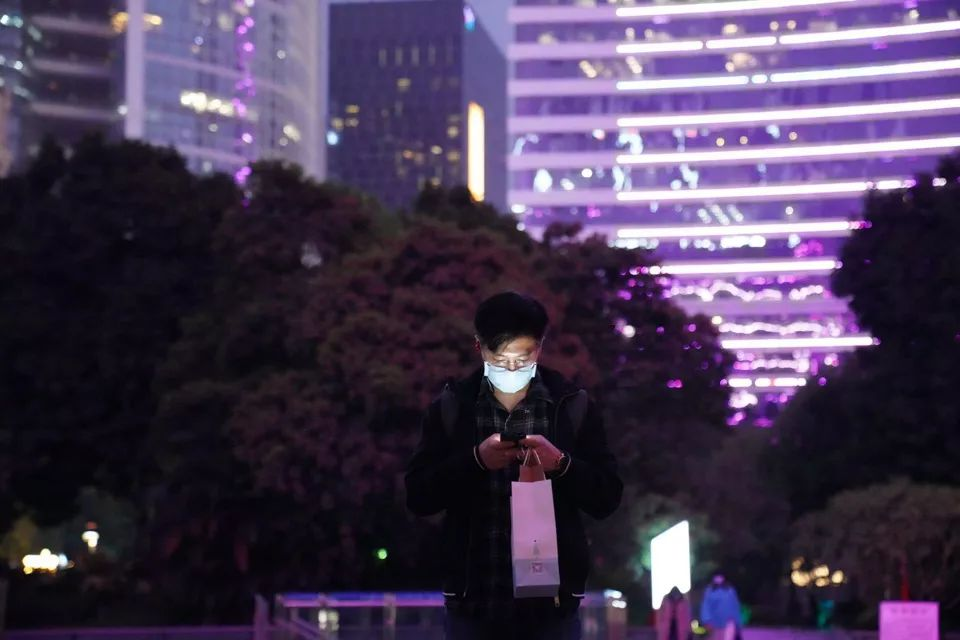
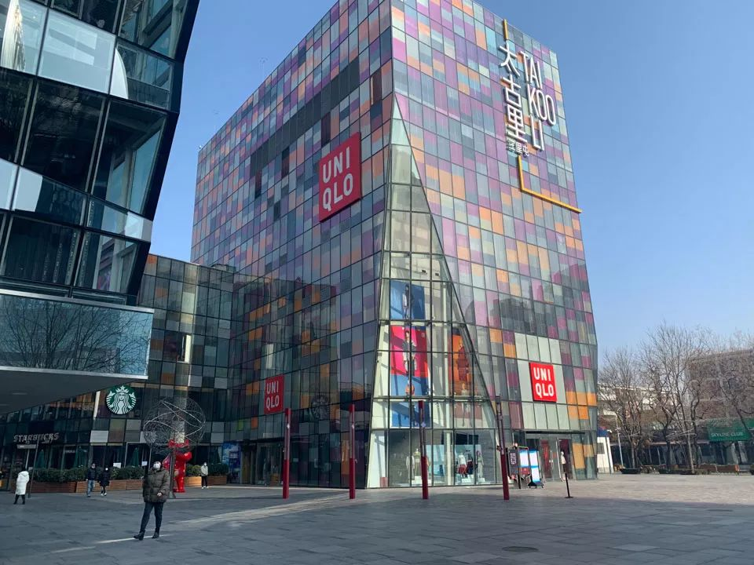
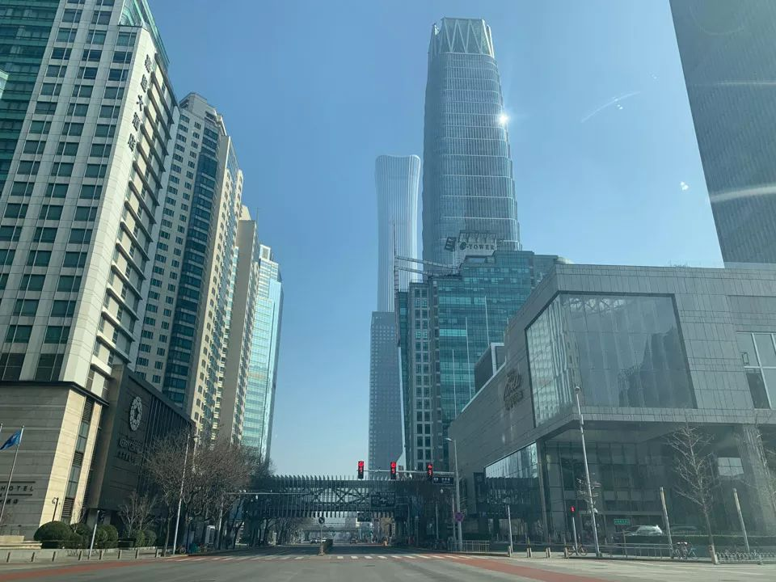
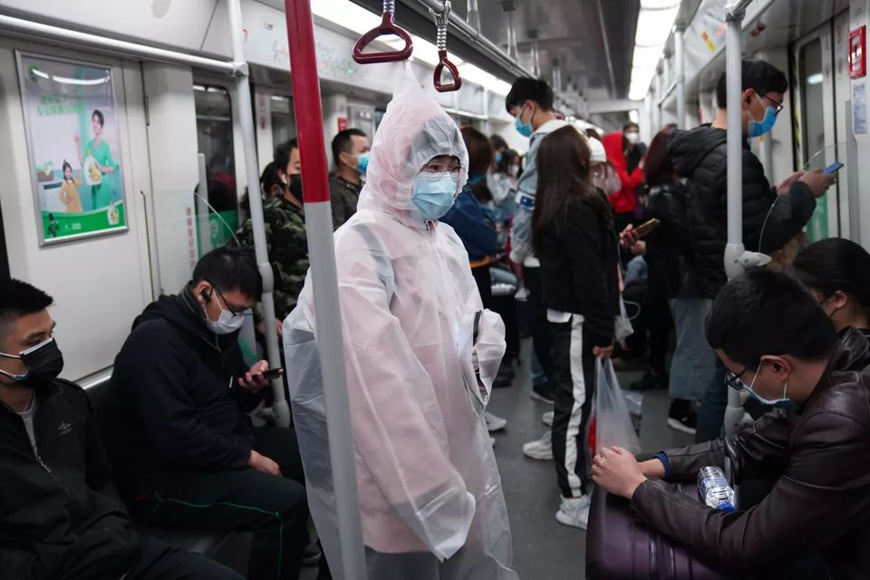
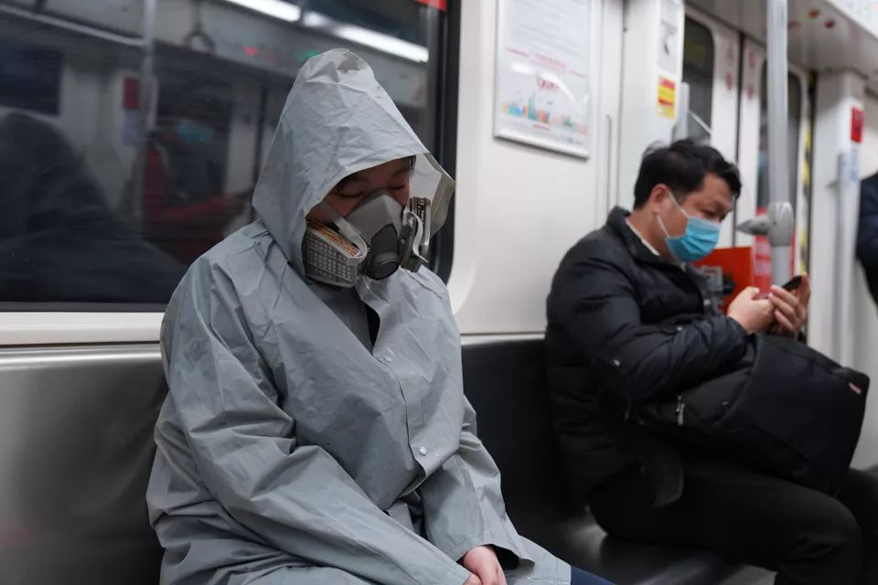
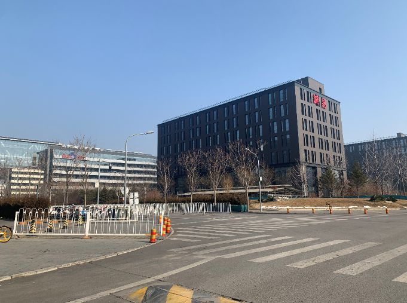
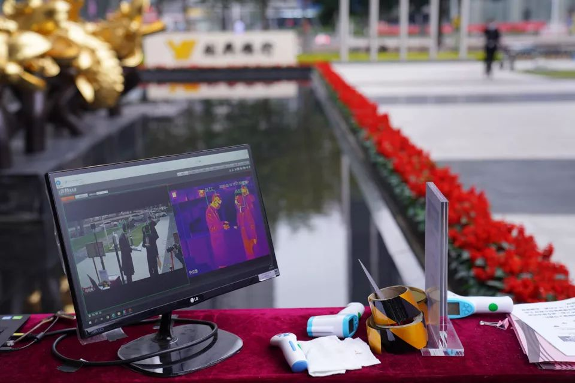

疫情中的复工族：希望生活早日回到正轨
原文链接 备份链接 _ “不知道那些曾经一起抢出站闸机的人，现在正在遭遇什么？只希望这场疫情早点儿过去。” _ 文 |《财经》记者 王丽娜 袁满 编辑 | 朱弢 疫情之下，每个人的生活都有变化。即便是距离疫情爆发中心武汉千里之外的北京。 …


*************▲*************广州街头，戴着口罩的行人。 （麦圈/图）
全文共2050字，阅读大约需要5分钟。
一场突如其来的疫情，给中国人带来近十年来最长的一个春节假期。随着2月10日的复工，城市正逐渐恢复往日的样貌。
本文首发于南方周末 未经授权 不得转载
文 | 南方周末记者 刘诗洋
责任编辑 | 顾策
2020年2月10日，疫情笼罩的漫长假期终于结束，但城市的复苏似乎仍需等待。
早在2020年1月27日，国务院就宣布延长春节假期，随后各地政府逐步跟进，大部分省市将复工时间定在了2月10日。

北京最热闹的三里屯，大部分店家都关门歇业。 （刘诗洋/图）
这一天上午8点，早高峰时段，首都北京的交通广播罕见地通报全城畅通。
国贸东三环桥，司机们踩油门的右脚多少会有点不适应——这个限速80km的路口平时连一半速度都达不到，现在稍不注意就会超速。
东三环桥下的北京国贸CBD，仍在疫情中沉睡。因为没有车流，路口的红灯显得时间过长。人流最密集的大北窑公交站和国贸地铁人烟稀少。写字楼一改往日的热闹，仅有的几个白领在前台测量体温后，不想多停留一分钟。

上午九点，空荡无人的北京国贸CBD光华路。 （刘诗洋/图）
在疫情还未褪去之时，不少人对回公司上班仍有些担心。
上午10点，在上海一家公司做会计的李冉，戴上两层口罩出门去上班，包里还装着两个备用。她最担心的是中午吃饭的问题，她不敢吃外卖，也不想在公开场合摘下口罩那么长时间。她母亲出门前还告诉她，如果来上班的人多，下午就请假回家。
上海经信委副主任张英在2月10日的新闻发布会上表示，根据他们的抽样调查，有80%的制造业企业希望复工，这部分企业的复工率已经到达70%。另外，软件和信息服务业，目前仍以居家办公为主，但也有80%以上开始复工。
一些明星企业复工的影响力甚至波及海外。特斯拉上海工厂的首日复工，令其股票在盘前上涨5.47%。这家备受瞩目的新能源车企，此前因推出低价版的国产Model3而获得中国消费者的广泛关注，但受疫情影响，他们表示原定2月初的交付会暂缓。
而在崇尚美食、气候温和的广州，最令人瞩目的是消费和服务行业的苏醒——它们原本是受疫情影响最大的行业。《南方都市报》记者在2月10日的报道中称，广州一些商场内店铺的开张率已达到八九成。
广州一些理发店已经开张。 （麦圈/图）
一位经营民宿酒店的老板告诉南方周末记者，他认识的很多餐饮业老板都在筹划开工，尽管目前一些地方还不允许开工。尽管疫情要求人们尽量少接触，但这天上午，他还是遵循传统，给员工派发了红包。

广州地铁里，人们穿着厚厚的防护衣。 （麦圈/图）

广州地铁里，人们穿着厚厚的防护衣。 （麦圈/图）
与繁忙的一线城市相比，全国其他地方的复工情况仍要让位于疫情管控。
在浙江温州，所有企业都不得在2月17日24时前复工，江西景德镇公布的复工日期则延缓到24号。而在郑州，政府要求企业要按照员工结构分别复工：本地员工为主的，不早于2月10日复工，疫区员工少的，可以在17号复工。除此之外的其他企业，都要求2月24日复工。
此外，还有一些城市则实行核准制，杭州市在2月10日之前共接到近3万家企业的复工申请，但只有162家被核准通过。
同样需要核准的还有深圳，一位从事手机配件生产的深圳公司老板告诉南方周末记者，他早在上周就递交了复工资料，但目前还没有接到许可。深圳目前批准复工的主要是大中型企业，万科集团选在了2月10日复工，而华为则早于2月3日就已经部分复工。
也许是因为SARS时期的恐慌。在北京工作的人似乎对复工更为保守，从依旧冷清的北京国贸再向西北30公里，平日里码农遍地的中关村软件园也还在沉睡。2月10日中午12点，往日车流不息的腾讯总部门前只有几个保安驻守，旁边的网易、新浪、联想也是一片冷清。

上午11点，网易和百度大楼门前一个人都没有。 （刘诗洋/图）
中关村软件园里以往最热闹的咖啡店和吸烟处，只有寥寥数人。在这片区域工作三年，换了四家公司的程序员于然告诉南方周末记者，他的工作完全可以在家里完成，在疫情彻底过去之前，他不会去上班。
事实上，相比于中小企业，互联网巨头们的复工计划已算相当人性化。百度、搜狐、美团等多家大型互联网公司的员工告诉南方周末记者，他们本周仍以网络办公为主，返岗日期都推迟到17号以后，而腾讯和今日头条，则直接把假期延长到了2月24号。
 广州街头，防疫人员拦住车辆测量体温。 （麦圈/图）
广州街头，防疫人员拦住车辆测量体温。 （麦圈/图）
据58同城招聘近期发布的《2020年疫情对企业复工与招聘影响调研报告》显示，47%的企业将在2月10日复工。15%的企业在2月10日以后复工，仍有27%的企业（截至2月5日统计）还未确定复工时间。

广州街头，随处可见检测体温的工作台。 （麦圈/图）
在采取延时复工的企业中，55%企业采取在家办公方式；32%企业休假，有工作响应即可；13%的企业正常休假。这表明，绝大部分企业采取了线上灵活办公方式，而根据58同城招聘调研数据显示，在家办公的企业中，51%属于IT、通信、电子及互联网行业。
一场突如其来的疫情，给中国人带来近十年来最长的一个春节假期。随着2月10日的复工，城市正逐渐恢复往日的样貌。夜里九点，中央电视台记者以直播的形式，乘车环绕北京，镜头再次掠过国贸CBD，在灯光的装点下，它看起来稍微恢复了一点往日的繁华。
在没有疫情的时候，北京CBD这片不足10平方公里的区域，在2018年创造了高达3163亿的GDP。因为数以万计的企业、总部机构入驻，这里是北京人流最密集的区域。同样在此办公的仲量联行就曾做过一次统计，平均每天有超过40万人在此办公。
然而和全国许多地方一样，它的运行方式正在发生着极大的变化。

广州地铁里，上班的人群接受体温检测。 （麦圈/图）

征集

《南方周末》现向所有身处新冠肺炎一线的读者公开征集新闻线索。我们欢迎武汉及周边城市医患联系记者，提供防疫前线的一手资讯，讲述您的新春疫情见闻。若您不在武汉，但您身处之所也有与疫情相关的重要新闻线索，亦欢迎您与我们分享。疫情仍在蔓延，南方周末将执笔记录每位国人在疫情面前的希望与困境，与广大读者共同面对疫情。祝愿所有读者朋友们，新春平安。线索可直接给本篇文章留言，格式为：【线索】+内容+您的电话（绝对会对您的个人信息保密）
戳击下面图片 继续阅读专题
原文链接 备份链接 _ “不知道那些曾经一起抢出站闸机的人，现在正在遭遇什么？只希望这场疫情早点儿过去。” _ 文 |《财经》记者 王丽娜 袁满 编辑 | 朱弢 疫情之下，每个人的生活都有变化。即便是距离疫情爆发中心武汉千里之外的北京。 …
原文链接 备份链接 _ 2月10日这个周一，中国多个省市迎来了春节后第一个工作日，虽然比原定假期已推迟一周，但政府、企业和个人所面临的疫情防控压力都不小。当前，湖北省仍需要着力抓好疫情防控，其他地区也需要做好防控的同时有序恢复生产 _ …
原文链接 备份链接 _ “不知道那些曾经一起抢出站闸机的人，现在正在遭遇什么？只希望这场疫情早点儿过去。” _ 文 |《财经》记者 王丽娜 袁满 编辑 | 朱弢 疫情之下，每个人的生活都有变化。即便是距离疫情爆发中心武汉千里之外的北京。 …
原文链接 备份链接 11.02.2020本文字数：4000，阅读时长大约8分钟 导读：企业虽然很艰难，但目前要做的就是配合执行国家的各项要求，早日战胜疫情，企业能早日找到出路。 作者 | 第一财经 张苑柯 元宵节刚过，疫情之下第一批复工 …
原文链接 备份链接 来源：雪球App，作者： 腾讯棱镜深网，（https://xueqiu.com/6718098612/140857927） @今日话题 作者：马关夏 编辑：康晓 出品｜深网·腾讯小满工作室 编者按：跨越疫情经济周期，需 …